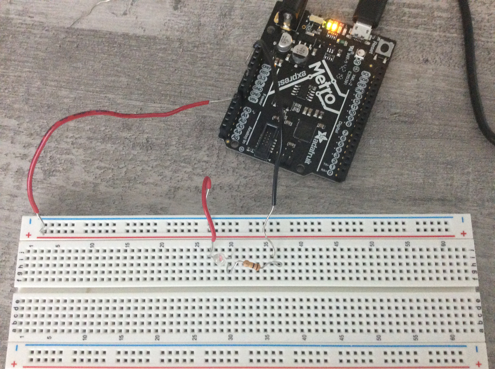
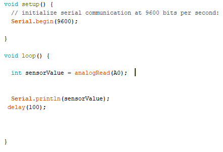
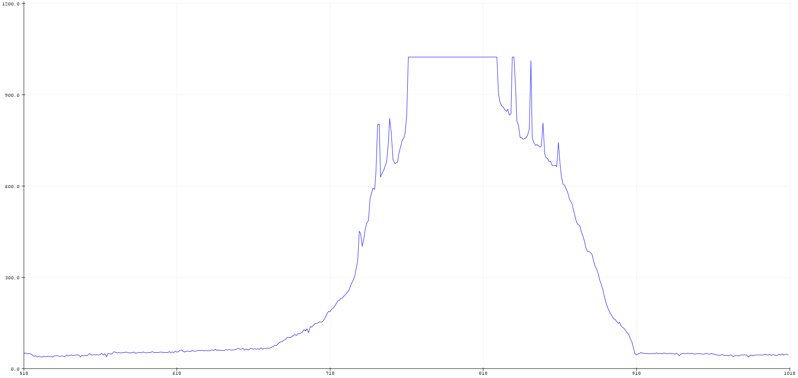

Assignment: Use a sensor to measure a physical quantity with Arduino. Calibrate your sensor. Show data in the form of a table or graph. Do the same as #1 with a sensor you have fabricated yourself using copper tape, aluminum foil, Velostat, etc.
For this assignment, we had to pick a sensor from our kit to integrate into our breadboard. We would then measure some sort of physical quantity using Arduino. I wanted to use something to do with light, so I decided to use the phototransistor which detects visible light. I set up the breadboard as shown below. 
After setting up my breadboard, I loaded in the basic code for printing sensor value.
Immediately, I opened up the Serial Monitor and started receiving values that I didn't understand. I played around with the breadboard for a bit, as well as adjusting the light in my room by opening and closing blinds. I even turned on the flashlight on my phone, and shined it into the phototransistor. But opening the serial plotter, I saw how everything was related.
The maximum of the graph was when I closed my hands around the phototransistor (closing off almost all the light), and the minimum of the graph was when my hands were completely away, and natural light was taking its effect on the sensor.
Assignment: